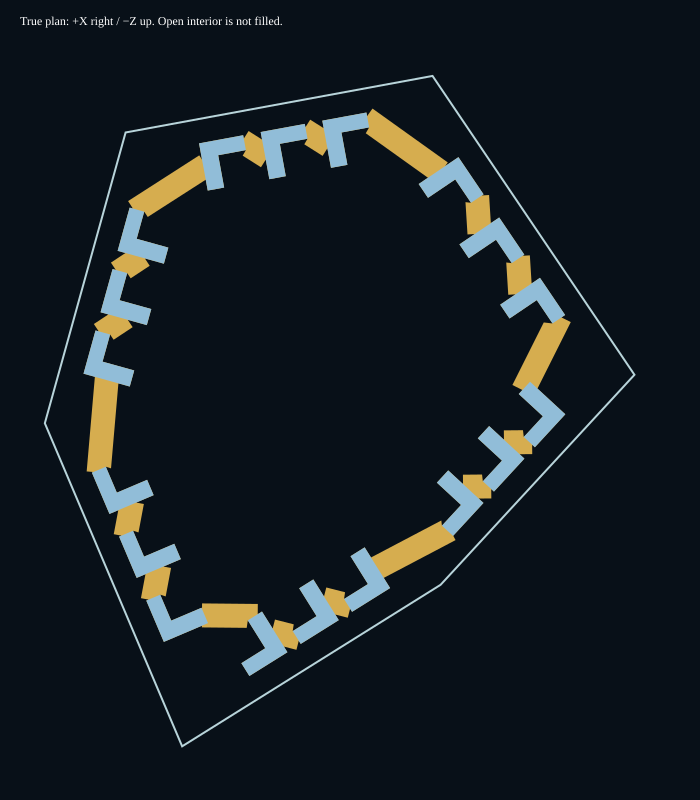

Partial architectural vocabulary: existing approved prototype operations, not complete authentic Print-Contour formation. No upper levels or terraces were invented. 1 connected solid region(s); 0 unresolved connections. No continuous 3-ft-clear floor route: subtracting generated walls/nodes and testing a 1.5-ft clearance radius leaves zero area. Exploratory geometry remains visible.
18 native L letters · 37 components · 624.301 ft² footprint · 16.283% coverage · 3209.847 ft² undeveloped. Coverage reference 40%, not a constraint.
Saved meshes and A/B provenance · Orthographic diagnostic
{
"id": "f2f0cabfbe471da0774c345da803ba1be7c14a5537c83fca3ec713b93fbcc914",
"measurements": {
"zoneAreaFeet2": 3834.147941022576,
"buildingFootprintFeet2": 624.301035065726,
"buildingCoveragePercent": 16.282653790850425,
"floorAreaFeet2": 624.3009920980367,
"sourceLetterFootprintFeet2": 345.2835676575512,
"protectedRecessAreaFeet2": 130.22779195939233,
"exportedRecessOverlapFeet2": 0.000029802426769393042,
"exportAreaToleranceFeet2": 0.00006,
"outsideAreaFeet2": 0,
"protectedOverlapFeet2": 0,
"solidComponents": 1,
"floorRegions": 1,
"heightFeet": 6,
"unusedZoneAreaFeet2": 3209.84690595685,
"unexpectedComponentIntersectionCount": 0,
"maximumComponentOutsideAreaFeet2": 0,
"sourceCollisionCount": 0,
"letterCount": 18,
"componentCount": 37,
"edgeParticipation": 6,
"arrangementDimensionsFeet": [
60.226758828222486,
70.43454096349086,
0.9130434821481295
]
},
"unresolved": [],
"sourceCollisions": [],
"componentOutside": [],
"unexpectedIntersections": [],
"limitations": [
"Full-zone placement using unchanged accepted prototype formation operations; not complete authentic Print-Contour architecture.",
"Upper rotation, running bond across multiple courses and terraces not implemented in this prototype.",
"3-ft floor ribbons are not a certified walkable route; source nodes may obstruct circulation.",
"Snapshot source alignment only; no live Site publication or browser storage mutation.",
"L-only demonstration; U/V placement and junctions not validated."
]
}